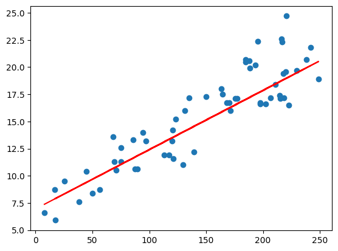

Supervised: the machine already knows what the correct output should look like, they already know that there is a relationship between the input and output variable.
classification: process of finding a model that separates input data into multiple discrete classes or labels [true or false, male or female]
regression: process of finding a model that predicts a continuous value based on its input variables
Unsupervised: the machine doesn’t know what the correct output is, allowing us to approach problems with little to no idea what results should look like
clustering: grouping objects into clusters
Regression predicts continuous values like temperature, price, salary, etc.
Linear regression is mainly used for finding a linear relationship between the target and one or more predictors by fitting the best linear relationship between the dependent (target) and independent variables (predictors)
Assumptions:
Predictor variables should be linearly related to the dependent variables.
The data should be normally distributed
There should be little or no multicollinearity present in the data
The mean of the residual (difference between actual and predicted value) is 0.
Simple linear regression
helps us find linear relationship between 2 continuous variables
Equation: Y = β0 + β1X + e Y = dependent variable/target variable β0 = intercept of the regression line β1 = slope of the regression line X = independent variable/predictor variable e = error
Implementation using Python
Problem statement : Build a simple linear regression model to predict sales based on the money spent on TV for advertising.
# importing needed librariesimport pandas as pdimport numpy as npimport matplotlib.pyplot as pltimport seaborn as snsfrom sklearn.model_selection import train_test_splitfrom sklearn.linear_model import LinearRegression# reading the datasetad = pd.read_csv("advertising.csv")ad.head()# Since our problem only needs Sales and TV, we do not need radio# and newspaper columns. ad.drop(columns=['Radio','Newspaper'], inplace =True)ad.head()
TV
Sales
0
230.1
22.1
1
44.5
10.4
2
17.2
12.0
3
151.5
16.5
4
180.8
17.9
# Equation: Sales = β0 + β1*TV + e# Setting the values for independent (X) and dependent variable (Y)x = ad[['TV']]y = ad[['Sales']]# Splitting the dataset into train and test set # train_test_split = splits data arrays into two subsets: training and testing# test_size = specifies the size of test data, default is 0.25# random_state = controls shuffling applies to data before applying splitx_train,x_test,y_train,y_test = train_test_split(x,y,test_size=0.3,random_state=100)
# Implementing the linear model# fitting the linear regression model # to build a linear regression model, you need an instance of LinearRegression()# class and use x_train, y_train to train the model using the fit() method# of that classslr = LinearRegression()slr.fit(x_train,y_train)# Model Equation# Intercept and coefficientprint('Intercept: ', slr.intercept_)print('Coefficient: ', slr.coef_)
Interpretation: If we keep the money spent on TV for advertisement as 0, the estimated average sales will be 6.948 and a single unit increase in money spent on TV for advertisement increases sales by 0.054.
# Prediction on the test set# prediction on test sety_pred_slr = slr.predict(x_test)# Predicted valuesprint("Prediction for test set: {}".format(y_pred_slr))
ValueError: Per-column arrays must each be 1-dimensional
# Actual value and predicted value# using np.squeeze to assure that arrays are one dimensiony_test = np.squeeze(y_test)y_pred_slr = np.squeeze(y_pred_slr)slr_diff = pd.DataFrame({'Actual value': y_test, 'Predicted value': y_pred_slr})slr_diff.head()
Actual value
Predicted value
126
6.6
7.374140
104
20.7
19.941482
99
17.2
14.323269
92
19.4
18.823294
111
21.8
20.132392
# Line of best fitplt.scatter(x_test,y_test)plt.plot(x_test,y_pred_slr,'Red') # generates line graph between x and pred outcomeplt.show()

# Model evaluationfrom sklearn import metricsmean_ab_error = metrics.mean_absolute_error(y_test, y_pred_slr)mean_sq_error = metrics.mean_squared_error(y_test, y_pred_slr)root_mean_sq_err = np.sqrt(metrics.mean_squared_error(y_test, y_pred_slr))# score method computes R^2 ; x and y are input features to evaluate performance# '{:.2f} formatted as a floating-point number print('R squared: {:.2f}'.format(slr.score(x,y)*100))# Absolute difference between actual/true and predicted values, lower = betterprint('Mean Absolute Error:', mean_ab_error)print('Mean Square Error:', mean_sq_error)# RMSE = SD of the errors which occur when a prediction is made on a dataset # root is considered while determining the accuracy of the modelprint('Root Mean Square Error:',root_mean_sq_err)
R squared: 81.10
Mean Absolute Error: 1.6480589869746525
Mean Square Error: 4.077556371826948
Root Mean Square Error: 2.019296008966231